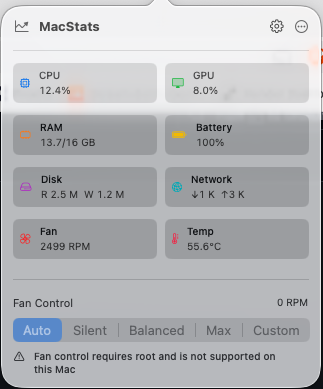
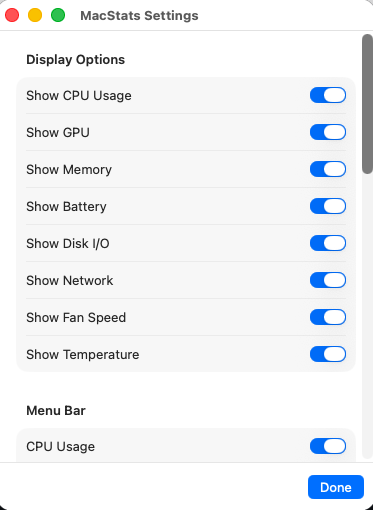

User guide / v0.1.0
Small app.
Everything explained.
Welcome
Everything you need to get MacStats running and make it your own.
MacStats is a native, read-only macOS menu bar system monitor. The v0.1.0 public preview supports macOS 13 (Ventura) and later. The release is packaged as Universal 2 for Apple silicon and Intel; sensor availability varies by hardware.
Download & install
- Download MacStats-0.1.0-universal.dmg and its SHA-256 checksum from the v0.1.0 release.
- Optionally verify the downloaded file using the command below.
- Open the DMG and drag MacStats.app into Applications.
- Open MacStats. This preview is ad-hoc signed and not notarized. If macOS blocks it, Control-click the app and choose Open, or use System Settings → Privacy & Security → Open Anyway.
- Find MacStats in your menu bar. It does not appear in the Dock.
cd ~/Downloads
shasum -a 256 -c MacStats-0.1.0-universal.dmg.sha256Keep the DMG and checksum file in the same folder. A successful check reports OK. If verification fails, download both files again before opening the app.
Understand the metrics
| Metric | What it tells you |
|---|---|
| CPU | Processor utilization as a percentage. |
| Memory | Used and total RAM; the compact menu bar value shows used memory. |
| GPU | Graphics utilization when the hardware exposes it. |
| Battery | Charge level on Macs with a supported battery. |
| Disk I/O | Read and write throughput, rather than free disk space. |
| Network | Received and transmitted traffic rates. |
| Fan | Fan speed in RPM, where available. This is a reading, not a control. |
| Temperature | Available temperature readings in °C. |
Unavailable readings are shown as unavailable. Sensors differ across Mac models and macOS releases; a missing value does not necessarily mean the app is malfunctioning.

Make it yours
Display options
Open the popover, then select the gear icon. Toggle the individual CPU, GPU, memory, battery, disk, network, fan, and temperature cards. All eight cards are enabled by default.
Menu bar
Select the metrics to display directly in the menu bar. These choices are independent of the popover cards. CPU is selected by default. Two or three values are usually enough to avoid crowding; selecting none restores the app icon.
Refresh rate
Choose 1, 2, 5, or 30 seconds. The default is 1 second. Sampling continues while any menu bar metric is enabled. With all menu bar metrics disabled, sampling runs only while the popover is open.
Launch at login
Enable Launch at Login under Startup. This requires running the packaged .app; the option is unavailable when running the bare executable. MacStats reports registration errors in Settings and reflects the actual system state.

Troubleshooting
I cannot find an app window
MacStats lives in the menu bar. Click its icon or selected metric text to open the popover. There is no Dock icon.
Temperature, GPU, or fan readings are unavailable
These values depend on hardware and macOS exposing the relevant sensors. Some Macs have no fan. MacStats does not substitute invented readings for unsupported data.
The menu bar is getting crowded
Open Settings and deselect some Menu Bar metrics. You can still keep those cards visible inside the popover.
How can I reduce background sampling?
Choose a longer refresh interval. To pause sampling whenever the popover is closed, deselect every Menu Bar metric.
Can I control my fans?
No. v0.1.0 only monitors your system. The supplied development screenshot includes an earlier fan control experiment, which is not part of the public preview.
Launch at Login is disabled or fails
Run MacStats from its .app bundle in Applications. Read the status and any error shown under Startup in Settings; registration must succeed before the setting takes effect.
Privacy & security
The app reads local system metrics. It has no accounts, no telemetry, and no network data upload. Preferences are saved locally using macOS UserDefaults.
The preview uses an ad-hoc signature, which is not notarization. Download from the project's GitHub release and verify its checksum. Report security issues privately using the security policy.
Build & contribute
Use macOS 13 or later and a Swift tools 5.9-compatible toolchain.
git clone https://github.com/eyupucmaz/MacStats.git
cd MacStats
swift build
swift test
bash Scripts/check-monitoring-only.shPackage a release locally
APP_VERSION=0.1.0 BUILD_NUMBER=1 RELEASE_STRICT=1 bash Scripts/build-app.sh
bash Scripts/package-dmg.sh 0.1.0
bash Scripts/verify-release.sh 0.1.0 1The packaging script produces the universal DMG and checksum in dist/. Read the contributing guide, code of conduct, and future fan control exploration before proposing changes.
This website is static HTML and CSS in docs/, published with GitHub Pages. No build dependencies are needed.